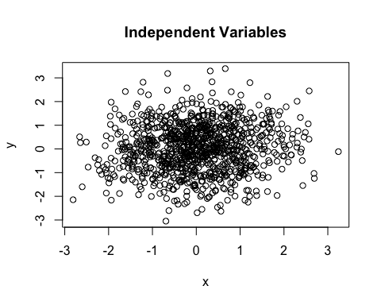
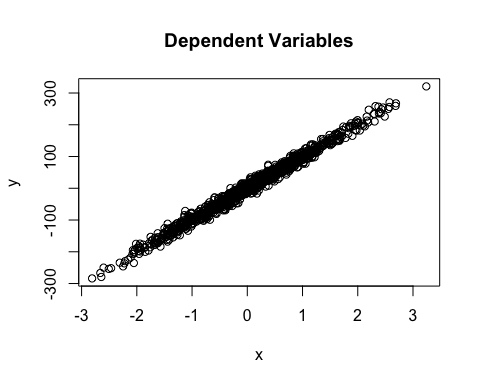
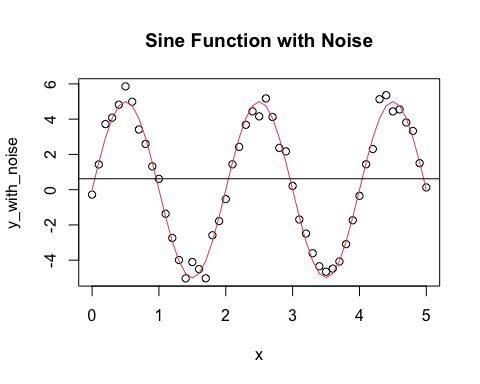

Behavioral analysis is a field of study in which the necessity often arise to understand the way in which different variables relate to each other and the meaning behind such relationships. One useful and powerful tool used to address this questions is the concept of mutual information, rooted in information theory.
Information theory provides an ideal framework for quantifying the amount of information related between variables. In this scenario, mutual information allows to measure the degree of dependency between two variables by assessing how much knowing one variable reduces uncertainty about the other. This metric is particularly valuable in the realm of behavioral analysis as it allows researchers to discern connections and dependencies between experimental variables and the behaviors observed.
Here we introduce two functions to calculate Mutual Information using a wide variety of methods. The general definition for calculating Mutual Information is as follows:
\[I(X;Y) = \sum_{i=1}^{n} \sum_{j=1}^{m}P(x_i,y_j)log \frac{P(x_i,y_j)}{P(x_i)P(y_j)} \] Where \(X\) and \(Y\) are discrete random variables and \(P(x_i)\) and \(P(y_j)\) are the probabilities of every possible state of \(X\) and \(Y\) respectively.
The mut_info_discrete() function calculates Mutual
Information of continuous variables using discretization through the
discretize() function from the infotheo
package. The function takes the following parameters:
x a numeric vector representing random variable \(X\).y a numeric vector of equal or different size as
x representing random variable \(Y\).method the method to calculate Mutual Information. The
default is emp for empirical estimation. Other options
areshrink for the shrinkage estimator, mm for
the Miller-Madow estimator, and sg for the
Schurmann-Grassberger estimator.With mut_info_knn() we can calculate Mutual Information
of continuous variables using the K-Nearest Neighbors method. The
function takes the following parameters:
x a numeric vector representing random variable \(X\).y a numeric vector of equal or different size as
x representing random variable $Y`.method one of KSG1 or KSG2
for the KSG estimator. The default is KSG1.k the number of nearest neighbors to consider. The
default is 5.
# close to 0 if they are independent
mi_discrete_independent <- mut_info_discrete(x, y)
if (requireNamespace("rmi", quietly = TRUE)) {
# Code that uses rmi::knn_mi
mi_knn_independent <- mut_info_knn(x, y, method = "KSG1", k = 5)
cat("Mutual Information (KNN) for independent variables:", mi_knn_independent, "\n")
} else {
cat("The 'rmi' package is not available. Skipping the example.\n")
}## Mutual Information (KNN) for independent variables: 0.01440586## Mutual Information (Discrete) for independent variables: 0.0351483
# far from 0 if they are not independent
mi_discrete_dependent <- mut_info_discrete(x, y)
mi_knn_dependent <- mut_info_knn(x, y, method = "KSG2", k = 3)
if (requireNamespace("rmi", quietly = TRUE)) {
# Code that uses rmi::knn_mi
cat("Mutual Information (KNN) for dependent variables:", mi_knn_dependent, "\n")
} else {
cat("The 'rmi' package is not available. Skipping the example.\n")
}## Mutual Information (KNN) for dependent variables: 2.073279## Mutual Information (Discrete) for dependent variables: 1.553392# simulate a sine function with noise
set.seed(123)
x <- seq(0, 5, 0.1)
y <- 5 * sin(x * pi)
y_with_noise <- y + rnorm(length(x), 0, 0.5)
plot(x, y_with_noise, main = "Sine Function with Noise")
lines(x, y, col = 2)
# add a regression line
abline(lm(y ~ x))
# compute correlation coefficient; for nonlinear functions is close to 0
correlation <- cor(x, y_with_noise)
cat("Correlation coefficient for sine function with noise:", correlation, "\n")## Correlation coefficient for sine function with noise: -0.001691181# mutual information can detect nonlinear dependencies
mi_discrete_sine <- mut_info_discrete(x, y_with_noise)
mi_knn_sine <- mut_info_knn(x, y_with_noise, method = "KSG2", k = 3)
if (requireNamespace("rmi", quietly = TRUE)) {
# Code that uses rmi::knn_mi
cat("Mutual Information (KNN) for sine function with noise:", mi_knn_sine, "\n")
} else {
cat("The 'rmi' package is not available. Skipping the example.\n")
}## Mutual Information (KNN) for sine function with noise: 0.3927523## Mutual Information (Discrete) for sine function with noise: 0.003534427